さて、前回触れていた通り、新しいパソコンを作成しました。
今回の要件としては以下の通り。
#
・とにかくパワフルである事。
・メモリ？アホ程あるからいくらでも使えっ
・多少でかくても、メンテしやすいケースである事。
・将来の拡張性も確保する事。
・グラボは現状では必要無いが、PCIe3.0スロットは備わっている事。
・静かである事。
・オーバークロックはしない。
・ブルーレイディスクはいらん。
・バックアップ専用HDDを内蔵する事。
#
ヨドバシとかドスパラとか歩き回って、店員に聞いたりカタログスペックとか調べて、
パワフルにしたいと言いつつもオーバースペックになりすぎない様に気をつけながら、、、
以下の構成に落ち着きました。(クリックで拡大)
【CPU】(Intel) Corei5 i5-3550
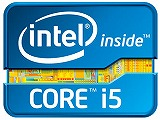
1) Core-i7 はオーバースペック。
2) オーバークロックはしないので倍率ロックフリーの3570Kは不要。
3) といってK無しの3570にしてもCPUクロックは0.1GHz増えるだけ。
4) K無し3570にしたって内蔵GPUはHD2500のまま。(HD4000なのは3570Kだけ)
5) 後はGPUクロック、キャッシュ、TDP共に同じ性能。
6) って事で、Core-i5シリーズの中で最もコストパフォーマンスが高い、使用用途に合ったアッパーミドルって位置付けなのでこれを選択。
7) 参考リンク
【CPUクーラー】(Scythe) 忍者参リビジョンB SCNJ-3100
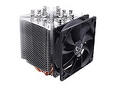
・でかいCPUクーラーがいいいい！ということでこれに決定。
【メモリ】(UMAX) Cetus DCDDR3-16GB-1600
・これを二組。合計32GBｗ
【マザーボード】 (ASUS) P8B75-V
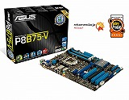
・ オーバークロックをしない為、Z77、H77チップセットは不要って事で、B75。
「何でも入り」のマザーボードも確かに魅力的ですが、、多分全部の機能は使わないでしょーとｗ
【HDD.1】(Seagate) ST1000DM003
・システム用です。
メモリが32Gbyteだとすると、Pagefileも同じだけ作られるので、Cドライブは150GByteにするべきだったorz
【HDD.2】(Seagate) ST2000DM001

・バックアップ専用です。
【HDD.3】(WesternDigital) WD5000AAKX
・仮想マシンやイメージファイル等、容量のでかい奴や仮想関係専用です。
WindowsXPでも大丈夫な様に、一応非AFT(AdvancedFormatTechnology)です。
【電源】(SilverStone) SST-ST75F-G-E
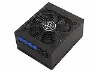
・フルプラグイン！80+Gold認証！750W!
【ケース】(CORSAIR) Obsidian 550D CC-9011015-WW
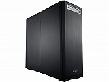
・静かで拡張性が高くてスクリューレスでメンテナンスが超ラク。
天板、側板、前面にエアダクトがあるので解放ケースにでも出来る欲張りな俺にピッタリのケースです。
【光学ドライブ】(LITEON) IHAS324-27
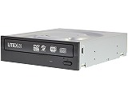
・安い！そしてDVD-DL(片面2層)書き込み対応！
【拡張ボード.1】(AREA) SD-PCIPOST-WB
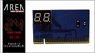
・空きPCIスロットに差し込むニッチなPOSTカード。
おまけでブザーも付いているので、起動時にPi!と鳴らせます。
【拡張ボード.2】(Skydigital) SKYHD CaptureX HDMI 1080p SKY-CXHDMIP
・VHS to DVDの為に購入。
変なやっすいキャプチャーコードを使うと、SD画質になってしまうので。
【OS】Windows7 Professional x86_64
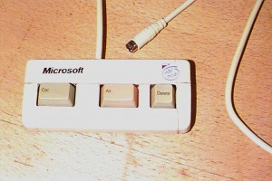
・まあ、今時のって事で。
多分ポストXPぐらいの勢いで長く使われ続けられると思う。
↑こんなキャンペーンもやってたしｗ
#
全部組み込んで。
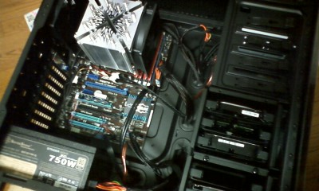
#
裏面配線をして。
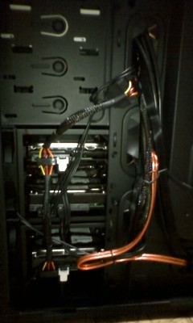
#
完成！
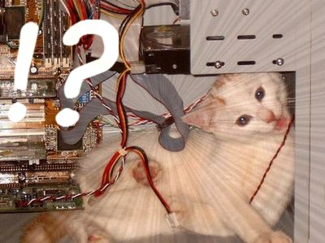
#
最後に旧PCからデータ吸い出して完成でござります。
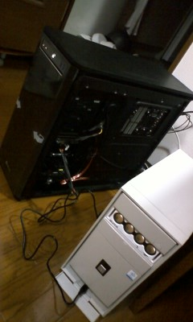
いやー快適快適。
何をやっても「もたつかない、べたつかない、揺るぎない(?」
こだわりのパーツ使って組み上げるのは気分がいいですねーｗ
それにしても贅沢なオモチャだ（
あけましておめでとうございます。
ちょいと色々と前後しますが、取り急ぎ備忘録をば。
えー、実は新しいPCを作りまして、Windows7 Professional 64bitも合わせて購入。
構成とかはまた記事にするとして、今、なんかWindows8が1200円で手に入るキャンペーンやってるじゃないですか。
で、PCマニア的に取り合えず買っとくかーてな感じで買っておいて、Windows7に上書きインストールもしてみました。
いやいやしかしこれは使いにくいっす。
バックアップから復旧して使用後10分でやめちゃいました：P
しかし、しかしですよ。
Windows8は例えProfessionalエディションであってもDVDすら再生出来ないとか。
再生する為にはMediacenterの使えるWindows8 pro Pack ってのが必要だとか。
で、それが2013年01月31日までなら無料で適用出来ちゃうキャンペーンをやっていたので
慌てて仮想環境にインストールする必要があったわけです。
ダウンロード方法とかISOの作り方は割愛するとして。
まずはVirtualBoxに適当に仮想マシンを作成します。
ちなみにバージョンは4.2.6 r82876
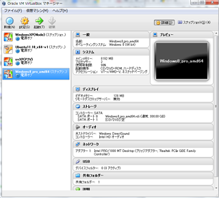
で、作成しておいたISOから起動して一回インストールする。
でもMetroのスタート画面から始まらず、購入時に得たキーはアップグレード版なので
新規インストールのアクティベーションも通りません。
しかし、そこで諦めてはいけない。
そのままもう一度ISOを開き、中にある"setup.exe" を起動し、「環境を引き継いでインストール」を選択します。
こうする事によってアップグレード版という扱いになり、アクティベーションが通っちゃうのですｗ
次は肝心のMediaCenterエディションの追加。
SSをまったく撮ってなかったので文字だけで。
1. 先ず、こちらのページに行ってメールアドレスを送信する。
これが中々返信来ないのでご注意。
俺の場合4日後に来た。
2. MediaCenterを追加する。
[Win]+[Pause]を同時押ししてコントロールパネルを開き、「Windowsの新しいエディションで機能を増やす」をクリック。
後は画面に従って進めていく。
3. 再度ライセンス認証
で、もう一回ライセンス認証しないとだめなんだけど、ネット経由では何故か出来なくなっております。
「不明なエラー(0xC004C4AA)」て奴ですね。
そこで次は電話認証を行います。
コマンドプロンプトを開いて、「slui.exe 4」と入力してEnter.
出てきた画面の番号に電話して、表示されている54桁(!)の数字を自動音声に従って入力していきます。
で、最終的にこんな感じになればOK。
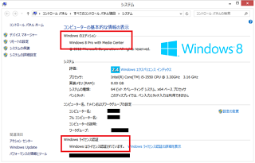
なんかパラドックス的ですが、これでアップグレード版でもクリーンインストールが出来ちゃいますよｂ
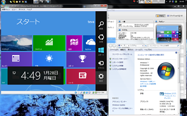
なんか駆け足でのご紹介ですが、お試しあれ～
あと当局からの介入はお断りいたしますー
あ、こら、やめろどこへ連れて行くんだ
痛くしない？いや、でも
おい！何も見えない！ぎゃああ
Ubuntu11.10(64bit)でJREとJDKのアップグレード方法が確立したのでご紹介。
まずはここからJDKとJREを拾ってきます。
* 現時点での最新版はjdk-7u7-linux-x64.tar.gz 、jre-7u7-linux-x64.tar.gz
1. 現在のJAVAバージョンの確認。
$ java -version
→ java version "1.6.0_24"
OpenJDK Runtime Environment (IcedTea6 1.11.4) (6b24-1.11.4-1ubuntu0.11.10.1)
OpenJDK 64-Bit Server VM (build 20.0-b12, mixed mode)
あーOoenJDKで対応してるなーてわかります。
#
2. OpenJDKを正規表現で一括削除(!)
$ sudo apt-get purge openjdk-\*
→ Purg icedtea6-plugin [6b21.2-2ubuntu0.11.10.3]
Purg icedtea-plugin [1.2-2ubuntu0.11.10.3]
Purg icedtea-6-plugin [1.2-2ubuntu0.11.10.3]
Purg icedtea-netx [1.2-2ubuntu0.11.10.3]
Purg openjdk-6-jre [6b24-1.11.4-1ubuntu0.11.10.1]
Purg icedtea-6-jre-jamvm [6b24-1.11.4-1ubuntu0.11.10.1]
Purg icedtea-6-jre-cacao [6b24-1.11.4-1ubuntu0.11.10.1]
Purg ca-certificates-java [20110912ubuntu3.2] [openjdk-6-jre-headless:amd64 ]
Purg openjdk-6-jre-headless [6b24-1.11.4-1ubuntu0.11.10.1] [openjdk-6-jre-lib:amd64 ]
Purg openjdk-6-jre-lib [6b24-1.11.4-1ubuntu0.11.10.1]
* apt-get に "-s" スイッチを付ければシミュレーションしてくれます。
何が削除されたかを知っておくのも大事。
ミスった時に戻せるし(
#
3. 削除されたのを確認。
$ java -version
→ プログラム 'java' は以下のパッケージで見つかりました:
* gcj-4.4-jre-headless
* gcj-4.6-jre-headless
* openjdk-6-jre-headless
* gcj-4.5-jre-headless
* openjdk-7-jre-headless
次の操作を試してください: sudo apt-get install (選択したパッケージ
うむ。削除出来たね。
#
4. javaフォルダ作成して。
$ sudo mkdir -p /usr/local/java
5. そこにコピーする。
$ sudo -s cp -r jre-7u7-linux-x64.tar.gz /usr/local/java/
$ sudo -s cp -r jdk-7u7-linux-x64.tar.gz /usr/local/java/
#
6. 全ユーザーに実行属性付与。
$ sudo -s chmod a+x jre-7u7-linux-x64.tar.gz
$ sudo -s chmod a+x jdk-7u7-linux-x64.tar.gz
#
7. アーカイブの展開。
$ sudo -s tar xvzf jre-7u7-linux-x64.tar.gz
$ sudo -s tar xvzf jdk-7u7-linux-x64.tar.gz
#
8. "/etc/profile"の末尾に以下を追記。
JRE_HOME=/usr/local/java/jre1.7.0_07
PATH=$PATH:$HOME/bin:$JRE_HOME/bin
JAVA_HOME=/usr/local/java/jdk1.7.0_07
PATH=$PATH:$HOME/bin:$JAVA_HOME/bin
export JRE_HOME
export JAVA_HOME
export PATH
#
9. システムに登録していきます。先ずはJREの「java」
$ sudo update-alternatives --install "/usr/bin/java" "java" "/usr/local/java/jre1.7.0_07/bin/java" 1
#
10. 次にJDKの「javac」と「javaws」もデフォルトのんだと教え込む。(登録する。)
$ sudo update-alternatives --set javac /usr/local/java/jdk1.7.0_07/bin/javac
$ sudo update-alternatives --set javaws /usr/local/java/jdk1.7.0_07/bin/javaws
#
11. 再起動して、"/etc/profile" の再読み込み。
# shutdown -r now
#
12. 再起動したらバージョン確認してみましょう。
$ java -version
→ java version "1.7.0_07"
Java(TM) SE Runtime Environment (build 1.7.0_07-b10)
Java HotSpot(TM) 64-Bit Server VM (build 23.3-b01, mixed mode)
#
$ javac -version
→ javac 1.7.0_07
これにてインストール完了です。ソソラシドー♪
FreeRapidDownloderとかも動くようになりますｂ
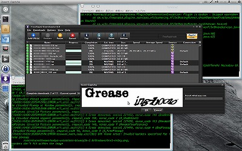
XPを何度か再インストールする事があります。
で、まあそれによってお決まりの認証手続きが必要になるわけですな。
うん、本当に自分で買った奴だからもう勘弁してください。
と、いうわけで。以下のファイルを新規インストール時にバックアップを取っておく。
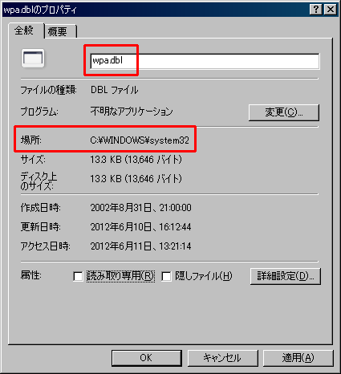
んで、XPのインストール後、F8を押してセーフモードで起動して上書きして終了。
これで再アクティベーションを回避出来ます。
中々使えるテクじゃないでしょーか！？(･∀･)
機会があれば、一度お試しあれ。
またLinuxネタですが、忘れないうちにメモ。
まずは今動作させているカーネルを確認。
$ uname -a
→ Linux XG41 3.0.0-17-generic #30-Ubuntu SMP Thu Mar 8 20:45:39 UTC 2012 x86_64 x86_64 x86_64 GNU/Linux
ははぁ、3.0.0-17-genericって奴なのね。
'generic(一般的な。ノーブランドの。)' とある様に
どんなPC環境に入れられても大丈夫な汎用的なセッティングがされております。
数年前は、それこそ俺がLinuxにハマッた2003年頃なんて日本語入力でさえ、、、いや、もうやめましょう。
あー、いやでもさ、Dellラップトップドライバとか10G Ethernetとか流石にいらんでしょ。
だからさ、カーネルぐらい自分でコンパイルした奴使おうよ！と、いうわけでございます。
カーネルチューニングとか大それた事は出来ませんしませんが
今現在動いているハード情報だけ有効にしたカーネルを作って気分良く使ってみようZE!って事で作業開始。
①
コンパイルに必要なツールをインストール。
"qt-dev" "qt4-qmake" "qt4-dev-tools" はmake xconfig で必要みたい。これが無いと動かなかった。
make menuconfig でやるなら不要。
$ sudo apt-get install kernel-package libncurses5 libncurses5-dev qt-dev qt4-qmake qt4-dev-tools
作業ディレクトリを作ってその中で作業します。
以後、ずっとユーザー権限でOKっす。
$ mkdir kernel
$ cd kernel
②
と、いうわけで現在動作しているカーネルソースを取得。
ユーザー権限でapt-get出来るなんて知らなかったｗ
ここが今回ハマった所。
$ apt-get source linux-image-$(uname -r)
$ cd linux-3.0.0
③
現在動作しているカーネルのコンフィグ情報を、カレントディレクトリに ".config" という名前で保存。
$ cp /boot/config-$(uname -r) .config
".config" の内容をカーネルソースのバージョンに合わせる手続きをします。
今回は同じバージョンだから必須じゃないけど、バージョンが異なる時には必要です。
取敢えず全部Enter押して進めちゃいましょー（
今回は更に、現在動いてるカーネルとハード情報から、最小限の構成を作ってみます。
例えばBluetoothを組み込みたかったら、あらかじめPC本体にドングルを差し込んでおくとか。
"make oldconfig" で、そのconfigの内容と拾ってきたソースとの差分を吸収して、
"make localmodconfig" で、現在システムで稼働中のモジュールを調査し、有効化してやるのです。
他のモジュール設定は自動で無効になります。
5300を超える項目の設定なんて、マトモな人間に出来るわけねーしな('∀`)ｗ
$ make oldconfig
$ make localmodconfig
④
そ・の・う・え・で☆
$ make menuconfig
か
$ make xconfig
とかで、わかる所だけ設定していきます。
まずは自分のCPUリソースに合わせた設定。
"Processor type and features" セクション以下の、"Processor family ***" で設定。
つまりこの中の
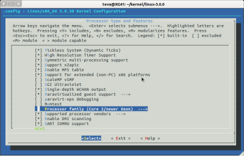
これ。
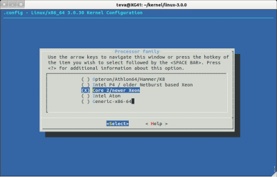
次に、Bluetooth機能をモジュールじゃなく、あえて静的に組み込んでみます。
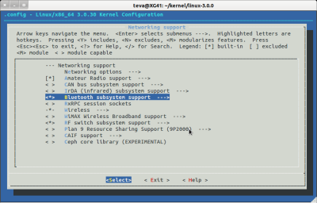
んで、重要な所。
今回の様に稼働中のカーネルと同じバージョンをビルドする時は、追加バージョンを英数字で指定してやる必要があります。
じゃないとビルドは出来てもインストールに失敗します。
設定場所は "General Setup" セクション以下の、"Local version - append to kernel release"
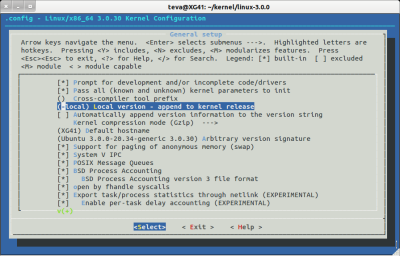
なんかいい名前も思いつかなかったので適当に "-local" とだけ指定しました。
何度も作り直す事も考えられるので、 "-20120611" とか、日付にするのが吉かも。
※ これがDebianだったらTEViAnとかにしてたのになーなんてｗ
⑤
で、いよいよコンパイル。
$ make-kpkg clean
$ CONCURRENCY_LEVEL=4 make-kpkg --rootcmd fakeroot --initrd --revision 0.0.custom linux-image linux-headers
"CONCURRENCY_LEVEL" で、並列コンパイル数の指定。
CPUコア数と同じか、その倍。
Core2Duoを使っているなら"4" 、Corei7なら"8" ってな具合に。(マジかよ)
"revision" で、出来上がるパッケージに通し番号を振ります。ここはまあ、適当に。
俺の環境(CPU:Core2Duo E8400 , Memory:DDR3で8Gbyte)で大体15分～20分ぐらいでした。
完成後のdebパッケージ名はこんなんになります。↓
"linux-image-3.0.22-20120611_0.0.custom_amd64.deb"
"linux-headers-3.0.22-20120611_0.0.custom_amd64.deb"
⑥
インストール
ひとつ上のディレクトリに上記パッケージが出来上がっているはずなので
dpkgコマンドで、image→headers の順番でインストーール！！
$ cd ..
# dpkg -i linux-image-3.0.22-20120611_0.0.custom_amd64.deb
# dpkg -i linux-headers-3.0.22-20120611_0.0.custom_amd64.deb
⑦
なんぞ間違えてそのカーネルで起動出来ない時の為のGrub2設定。
$ sudo update-grub
→ Generating grub.cfg
Found linux image: /boot/vmlinuz-3.0.0-****
…以下略
/etc/default/grub を編集。
「GRUB_HIDDEN_TIMEOUT」の行をコメントアウト。
そして「GRUB_TIMEOUT=5」とかにして、自動起動待ち時間を5秒ぐらいに設定する。
これによって、今回作ったカーネルで動かない時とかに
一つ前のバージョンのカーネルで起動出来たりするわけですな。
Finish!
これで終了です。
再起動したら、ほんとにちゃんと入れ替わっているか確認してみましょｂ
$ uname -a
→ Linux XG41 3.0.22-20120611 #1 SMP Thu Mar 29 13:48:23 JST 2012 x86_64 x86_64 x86_64 GNU/Linux
お疲れ様でした(･Θ･)b